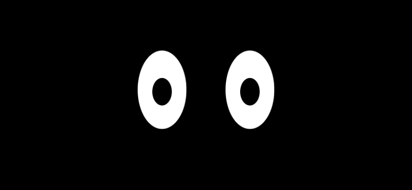
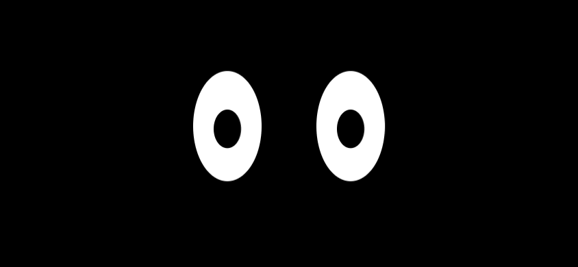
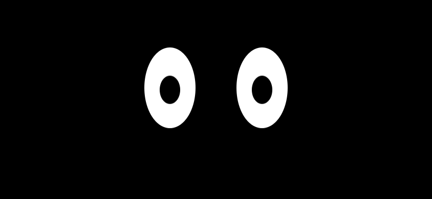
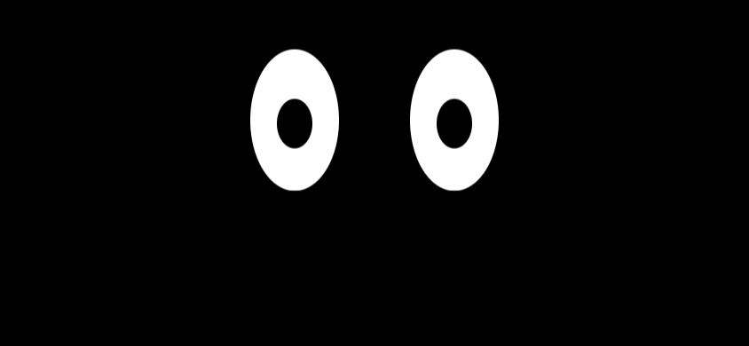
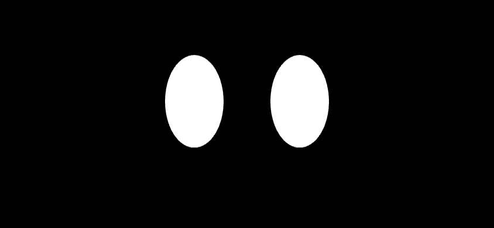
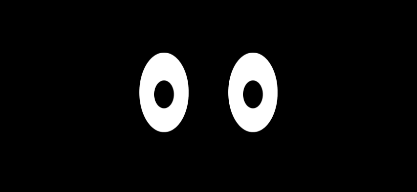
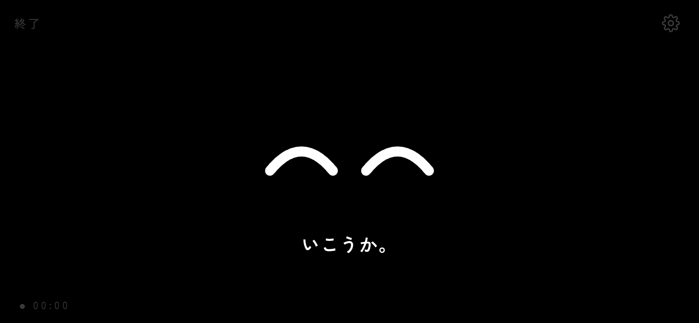
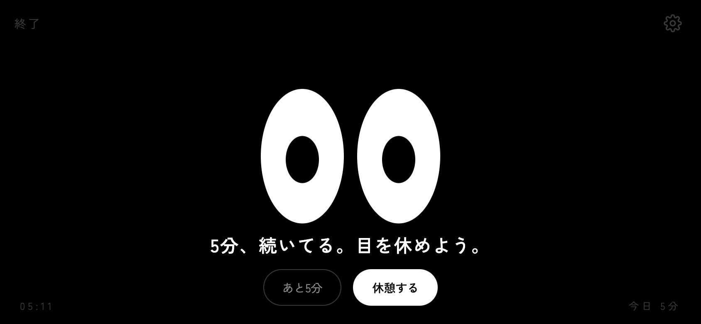
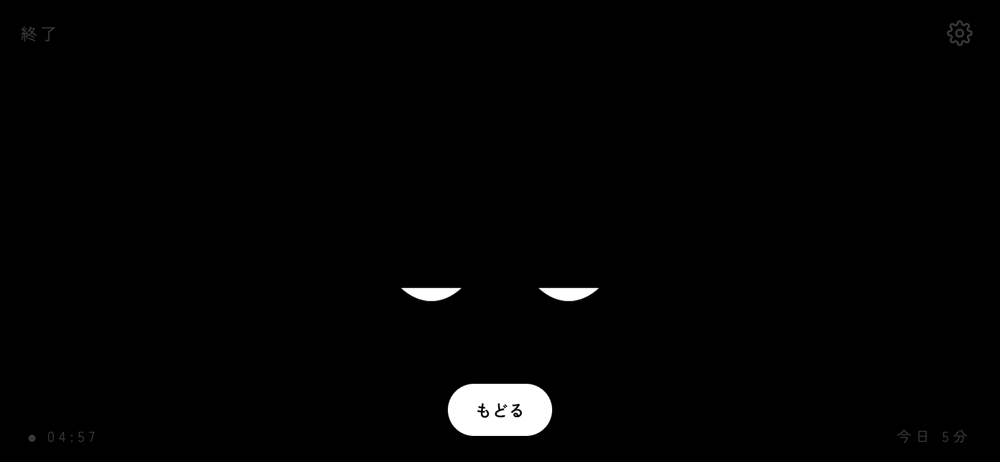
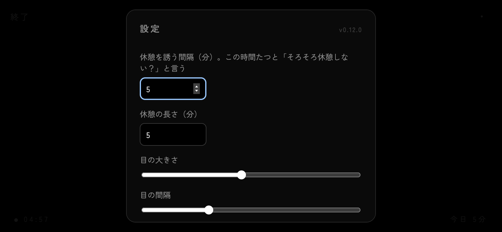

スマホを横向きにして、机の端に立てかける。それだけ。
黒い画面なので眩しくない。OLED ならほぼ消灯で電池も軽い。「ホーム画面に追加」すると全画面になる。
時間を測りはじめる。目はまばたきして、視線が泳いで、ときどき勝手に何かする。画面をなでると目で追う。
決めた時間がたつと、目が笑って「そろそろ休憩しない？」。休憩中は目を閉じて待っててくれる。
作業中は集中系、休憩中は癒し系。騒がしいことはしない。






数字は隅に小さく。主役はずっと目。
画面はほぼ黒。光るのは目だけ。OLED なら消灯に近い。




無料。アカウントもログインも無い。設定と今日の合計はブラウザの中にだけ保存される。
ウェブアプリ。ブラウザで開いて「ホーム画面に追加」すると、全画面・横向きでアプリみたいに起動する。
画面はほぼ黒なので OLED なら消灯に近い。「画面を消さない」をオンにすると画面が点きっぱなしになるので、その分は減る。
ブラウザからは他アプリの通知は見えない。通知を引き下ろして見た時（画面が隠れた時）と、本体の短い振動（実験的）には反応する。
使える。Space で開始・休憩・戻る。マウスで目の周りを回すと目が回る。
まばたきの音。黒い画面で白い目が「ぱち」とする、その一瞬がこのアプリの全部。